In a 10-week SCADpro collaboration with Whirlpool, the client asked us to design a disruptive, next-gen laundry system that breaks boundaries in how people experience this essential task. We delivered Whirlpool Zero: a 2-in-1 washer-dryer with a 45-degree angled drum, available in two design expressions (integrated or statement piece), featuring a button interface and companion app. The concepts were prototyped and presented to Whirlpool stakeholders as a 10-year design vision.
The project received strong stakeholder engagement, with positive reception from Whirlpool's VP of Global and a request for additional presentations to the marketing team and broader stakeholder group.
March 2025 - May 2025
23 SCADpro students
Product design
Interface design
App design
Design a disruptive, next gen laundry system rooted in breaking boundaries of how people Experience this essential task.
Younger consumers are unfamiliar with the Whirlpool brand and increasingly hard to convert. How do we breathe new life into a legacy brand, improve to keep up with the competitive market, and maintain consistency across physical and digital systems?
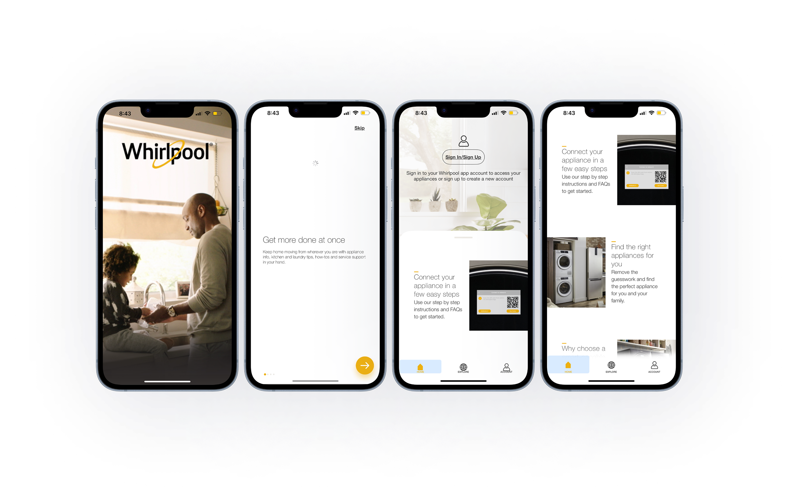
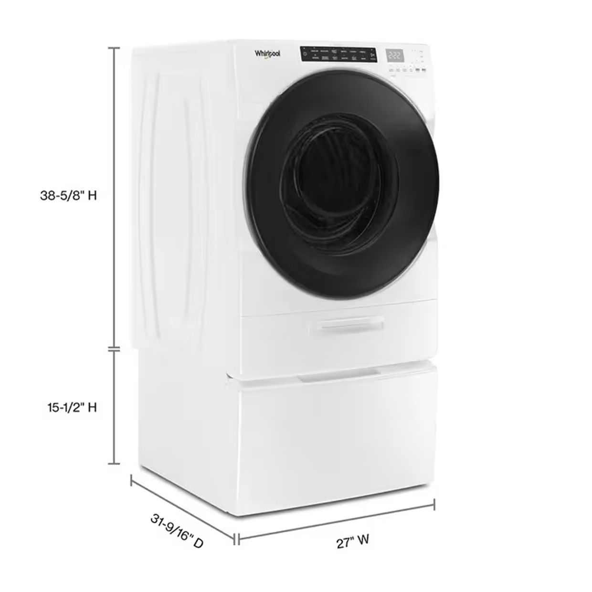
Using insights from our primary research, we developed a detailed persona and empathy map that represent our target audience.
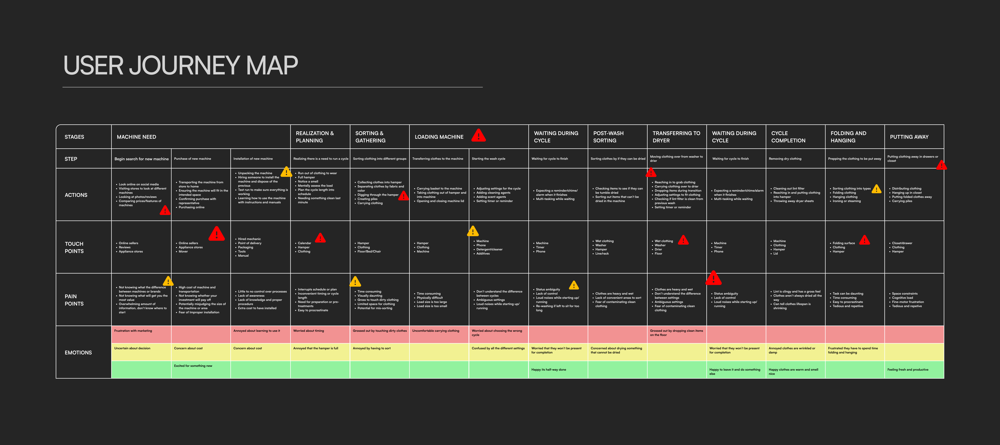
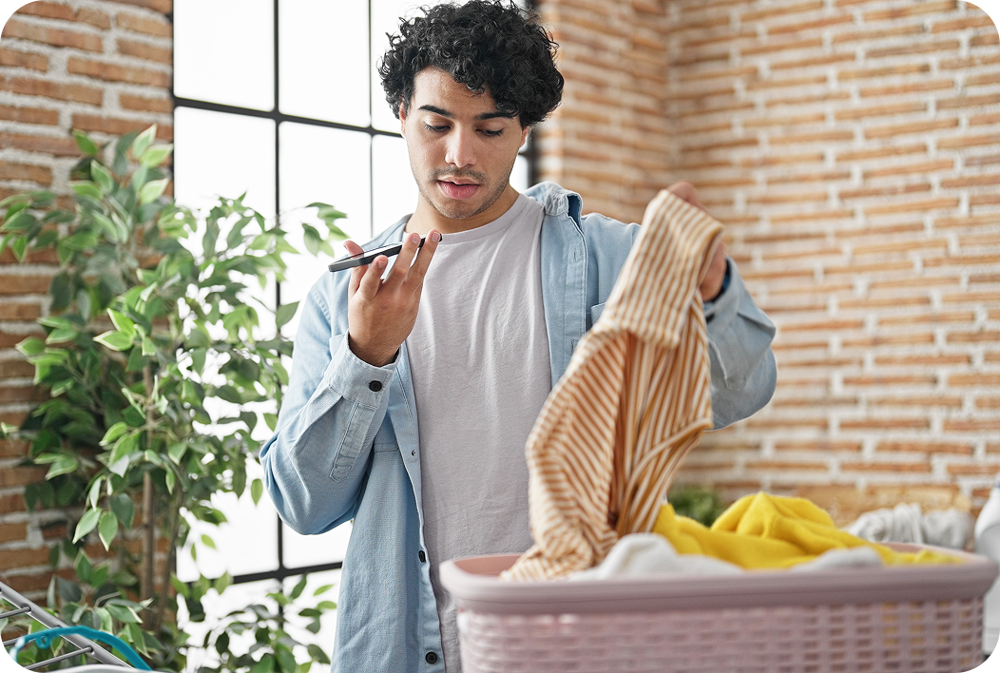
A 24-year-old worker who enjoys exploring content and relaxing after long days. Alex wants simplicity and efficiency in daily chores without interrupting their much-needed downtime.
As a laundry system designed to reduce mental load, the App integration allows for remote start, cycle tracking, and progress notifications.
Designed for diverse living spaces, modular, ergonomic, and compatible with existing setups.
For younger users living fast-paced lives, the phone is the natural main touchpoint. The app shouldn't just support the machine, it should lead the experience.
We initially thought that for younger users living fast-paced lives, the phone would be the natural main touchpoint for every interaction with the machine.
Our research told a completely different story. Context Drives the Interface.
The app only takes over in specific, high-friction scenarios — leaving the house, scheduling a late-night cycle to avoid peak electricity rates, or checking in remotely. Otherwise, they just want to press a button and walk away.
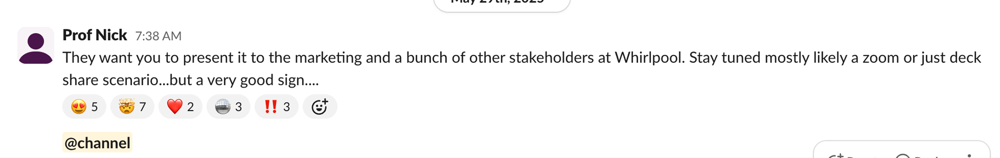
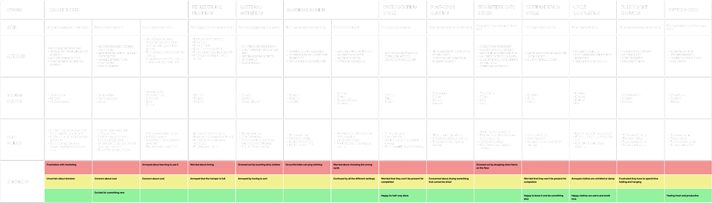
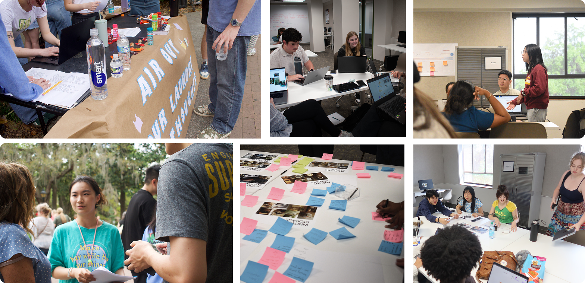
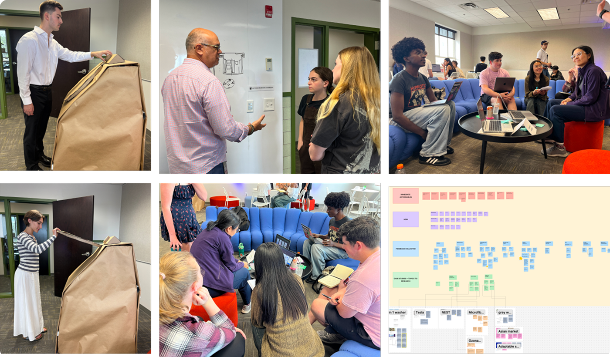


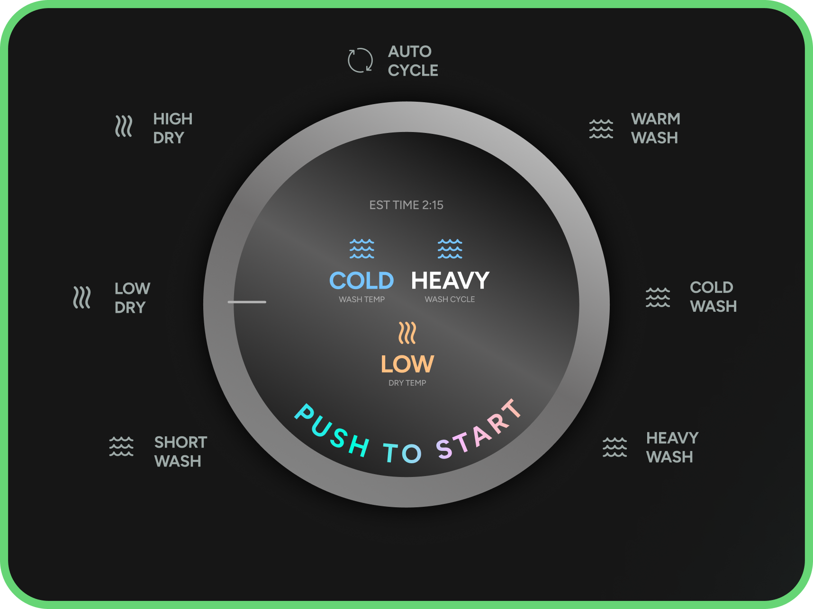
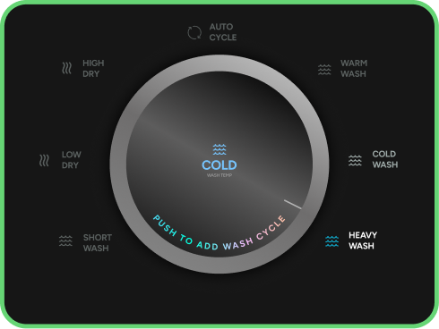
For those specific cases when you need a little more control, there are 6 additional settings: Wash Only, Dry Only, Quick Refresh, Eco Mode, Heavy Duty, and Delicates.
But you won't always be at the machine. So we created a widget that integrates into any interface. It displays the progress ring and countdown, and the option to pause your cycle, no matter where you are.
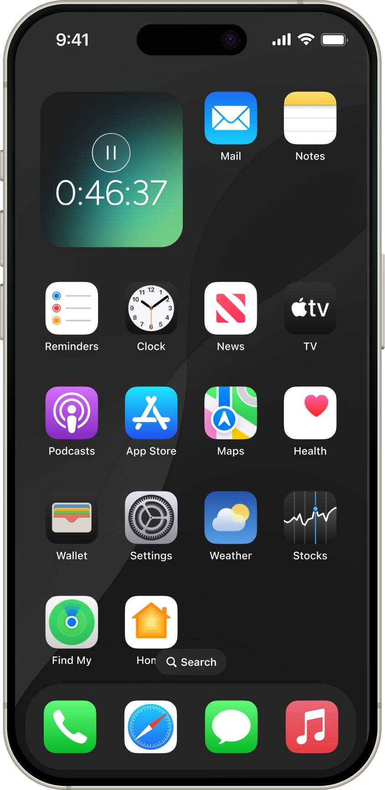
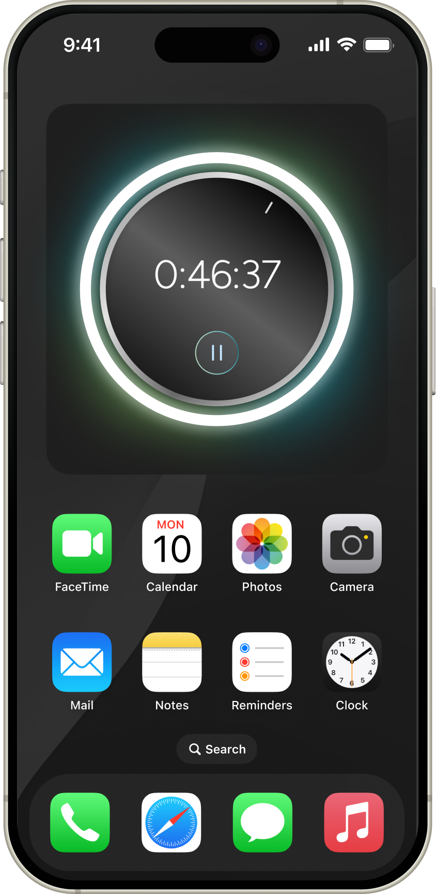
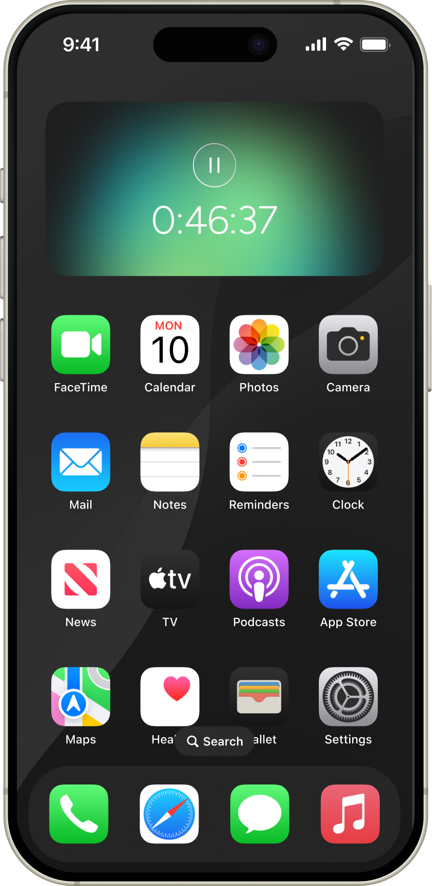
But what if you DO want control? What if you need to know EVERYTHING about your laundry? For the laundry aficionados we have the app. It features everything you could possibly want to know about your laundry: usage history, water and energy saved, connecting smart home devices like the Alexa or Home-Pod, and an AI assistant for any questions you might have.
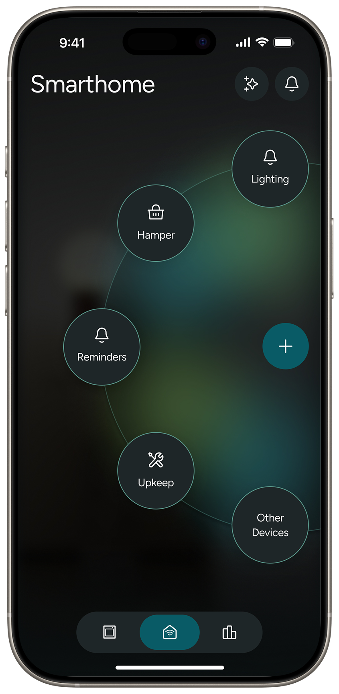
Homepage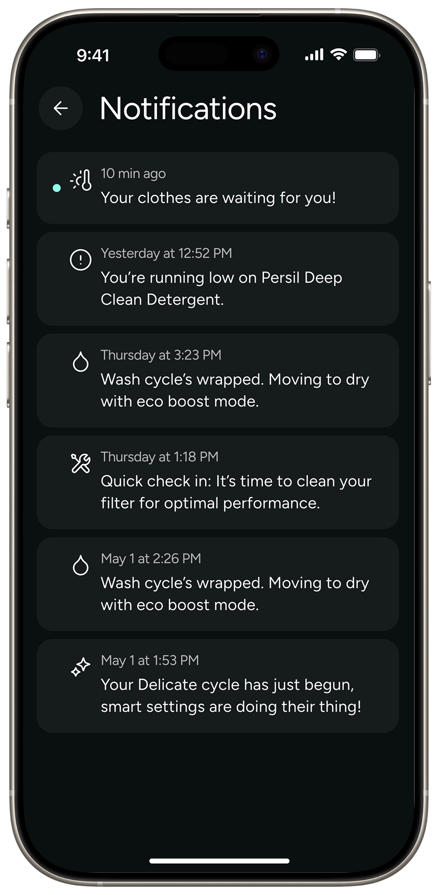
NotificationTo look 10 years into the future, we also wanted to reimagine what the laundry experience could look like beyond just a screen.


These colors follow the design guidelines, including a spectrum of colors that will be applied across interfaces and product communications.